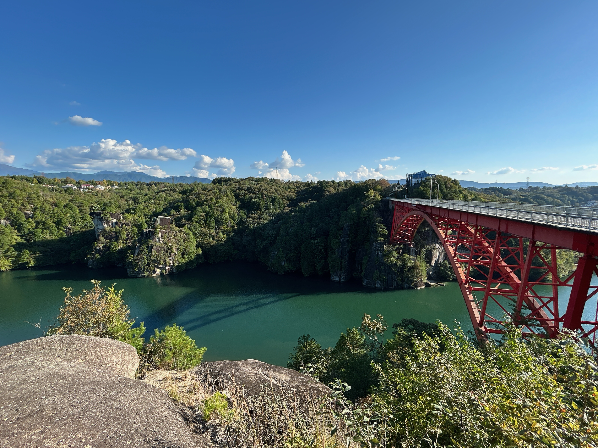
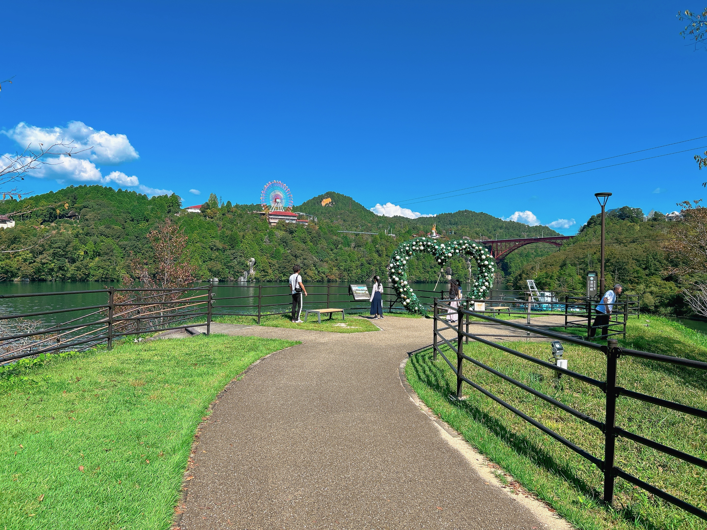
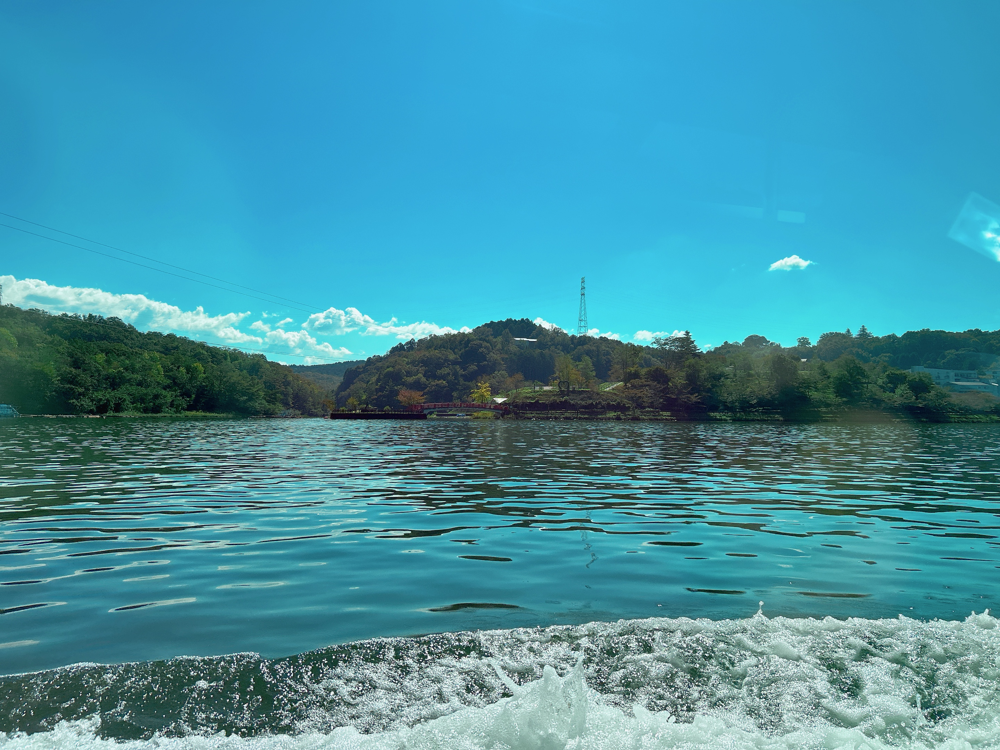

岐阜県 中津川市 Vlog
恵那峡とホコグランピング
恵那峡から見える青い山脈
橋の上から青い山々や川が見れる他、遊覧船で川を渡ることも



ホコグランピングで、優雅に大自然を味わう
星空の下、キャンプファイヤーやバーベキューをしながら非日常体験

恵那峡とホコグランピング
橋の上から青い山々や川が見れる他、遊覧船で川を渡ることも
星空の下、キャンプファイヤーやバーベキューをしながら非日常体験